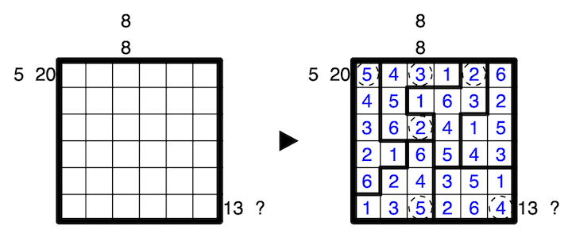

In each clued row or column, exactly two clues are given. One of the clues corresponds to the cell immediately in front of the clues, call the number in this cell X. The other corresponds to the Xth cell in the direction of the clues. Which clue corresponds to which cell must be determined for each pair of clues.
For both of these cells, the number placed indicates the total amount of cells seen from that cell within its region, including itself, where region borders and the edge of the grid obstruct vision. The associated outside clue gives the sum of all such numbers seen. A question mark may be any positive value.
One border is already given.
A 6x6 example is provided:
